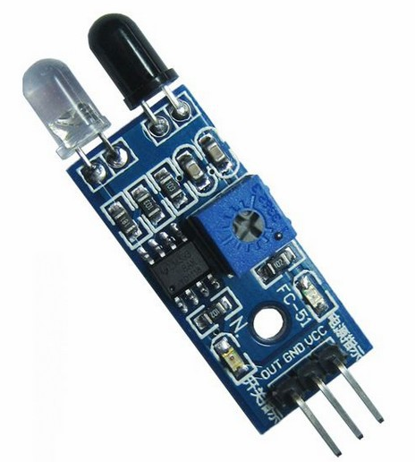

本主題的完成線
- 知道距離感測器如何接到小車上。
- 會用
sensor.ping()讀出距離數值。 - 知道不同距離會對應不同 RGB LED 顏色。
- 理解
if / elif / else在這個主題中的用途。
Topic 2
第二個主題從「控制小車移動」往前走一步，學習如何讀取感測器數值。 這一題先不直接做循跡，而是先讓學生看見距離變化，再用 RGB LED 與條件判斷把變化表現出來。
sensor.ping() 讀出距離數值。if / elif / else 在這個主題中的用途。
這個主題會先從真實小車與距離感測器開始，再延伸到程式與條件判斷。
Topic Route
先認識硬體，再看暖身程式，最後才進入完整程式與條件判斷。
先看小車上的距離感測器與 RGB LED，知道等一下程式控制的是哪個裝置。

先知道感測器接在哪裡，之後看程式才會知道為什麼用這些腳位。

暖身程式只做一件事：讓學生看到 RGB LED 的顏色變化。

把距離數值接到 if / elif / else，就能根據距離切換不同顏色。

Two Programs
這個主題分成兩份程式：先看顏色變化，再看距離感測與條件判斷。
Main Program
學生看懂 sensor.ping()、print() 和 if / elif / else，就完成這個主題最重要的學習目標。
載入中...Code Walkthrough
這個主題的程式比 Boot Camp 多了一些感測器與條件判斷，但核心結構仍然很清楚。
先用 RUS04(sensor_pin=15, rgb_pin=14) 建立距離感測器與 RGB LED。
透過 sensor.ping() 讀出距離，並用 print() 把結果顯示在 Shell。
用 if / elif / else 把距離分成近、中、遠三種範圍。
距離改變時，RGB LED 也跟著改變顏色，讓結果更容易看懂。